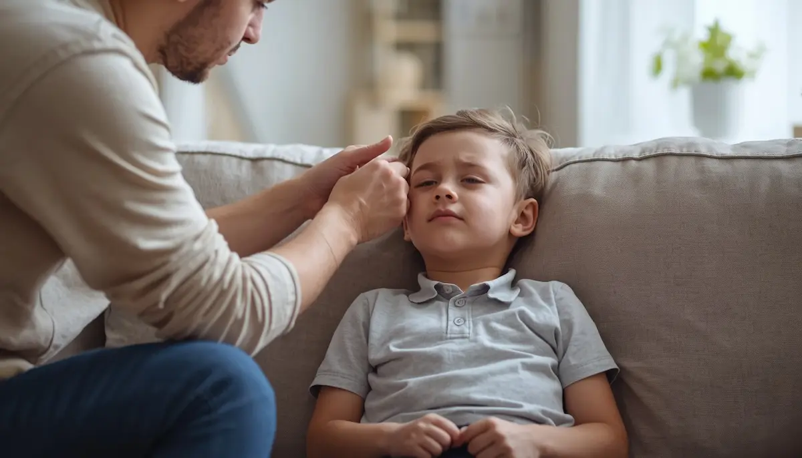

Gestión de golpes, chichones y pequeñas contusiones
Los golpes contra esquinas, muebles o juguetes son parte habitual de la exploración infantil. Ante una contusión o la aparición de un chichón, la medida inicial más eficaz es la aplicación de frío local indirecto —nunca hielo directo sobre la piel— envuelto en un paño limpio durante unos diez minutos para reducir la inflamación y aliviar el dolor.
Vigilar señales de alerta tras un impacto craneal
Si el golpe se produce en la cabeza, es fundamental mantener la calma y vigilar al menor durante las horas posteriores. Se debe prestar atención a signos de alarma como vómitos repetidos, somnolencia excesiva o dificultad para despertar, llanto inconsolable persistente, mareos o alteraciones en la marcha, consultando de inmediato con los servicios médicos si aparecen.
"Aplicar frío local con cuidado y vigilar la evolución posterior ante golpes en la cabeza garantiza una atención médica oportuna y segura."
Controlar las contusiones con rigor preventivo
Diferenciar entre un chichón común y una contusión con síntomas neurológicos protege la salud del menor y otorga tranquilidad a los educadores y familiares.
➔ Volver al índice de Prevención y primeros auxilios